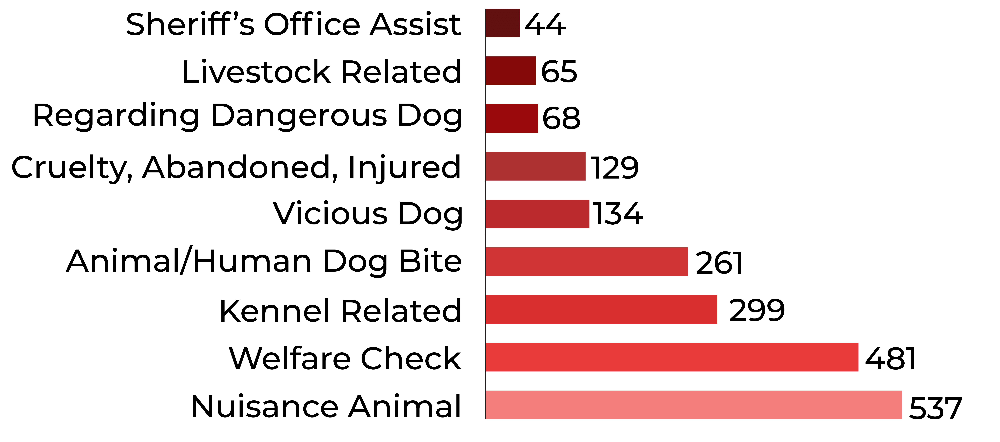

Protecting Animals, Protecting People
Snohomish County Animal Services, a division of the Auditor’s Office, protects the health, safety and welfare of animals and people in our community, working closely with local law enforcement, animal advocacy groups, veterinarians, animal shelters and safe havens. Animal control officers and the administrative support staff respond to community concerns through 911, via our non-emergency phone line and by online complaint. Animal Services works to promote responsible animal ownership in unincorporated Snohomish County through education, licensing, investigation, enforcement, and community collaboration.

Animal Control Officers are highly trained in animal care and handling and must graduate from the Washington Animal Control Academy. They enforce state and local laws related to animals, issue civil violation notices and refer criminal investigations to the Prosecuting Attorney’s Office for charging decisions.
Animal Service Cases by Type
Snohomish County Animal Control Officers investigate complaints regarding animal welfare, dog bites/attacks, nuisance or vicious animals, livestock at large, leash law violations and more. Animal Control Officers also respond to a variety of cases in unincorporated Snohomish County throughout the year and assist Snohomish County Sheriff Deputies on cases involving animals.
Pet Licensing
In unincorporated Snohomish County all dogs and cats must be licensed annually. License fees help us promote responsible pet ownership through education, outreach and enforcement when necessary.